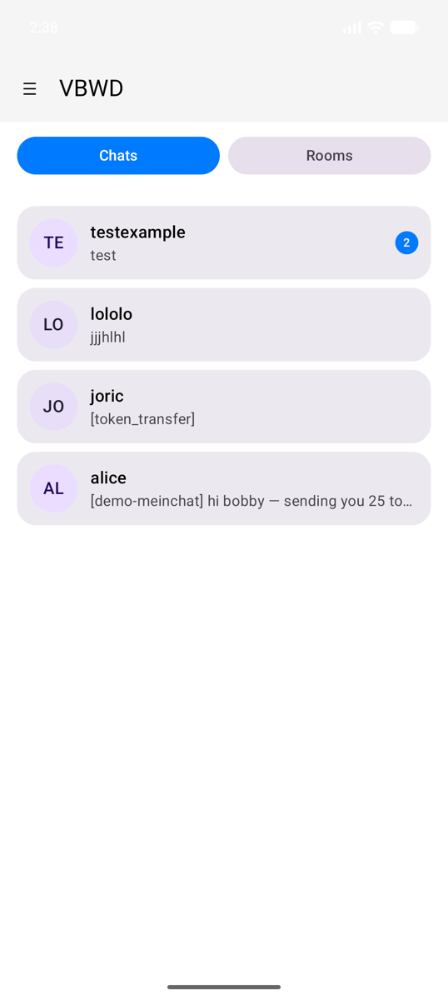
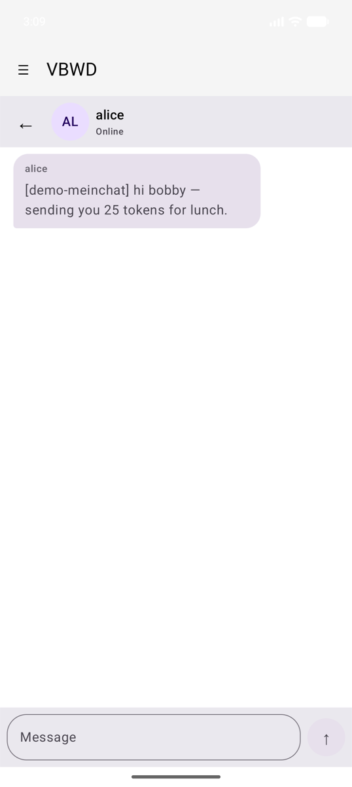
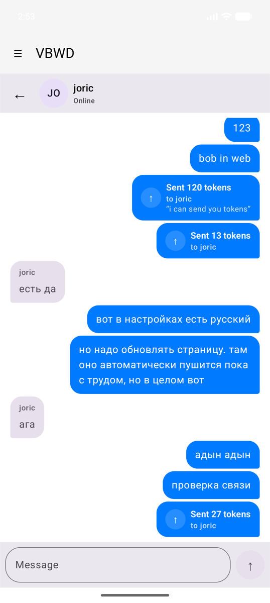
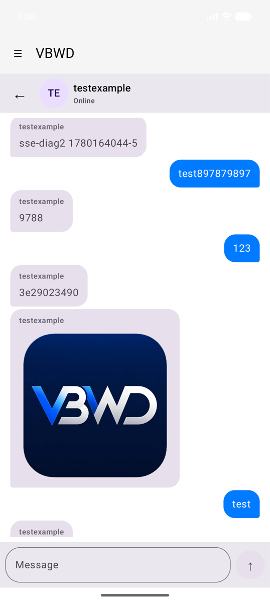
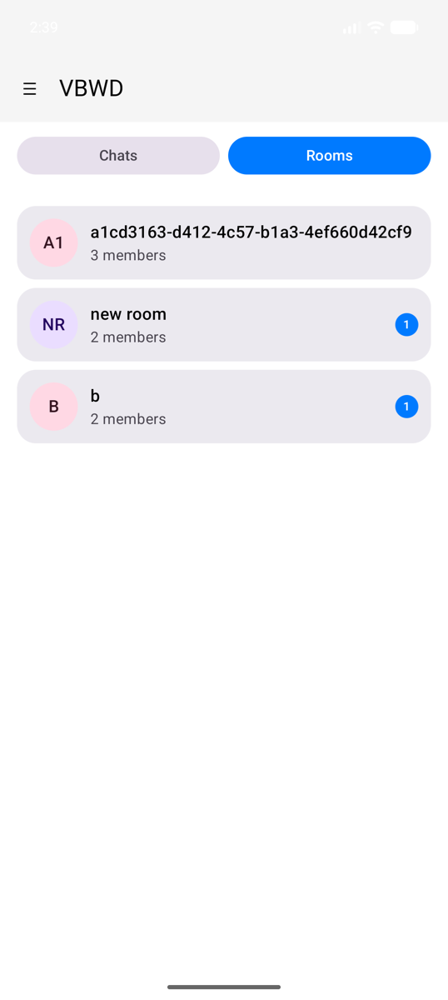
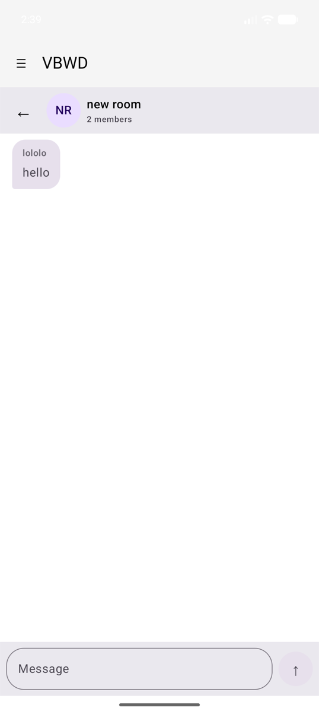
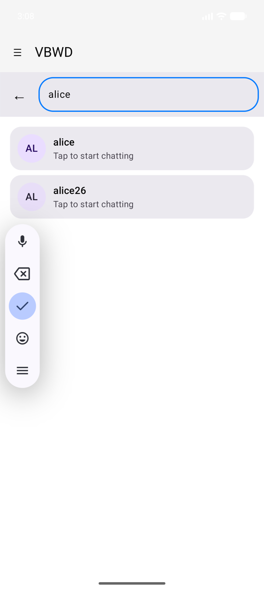
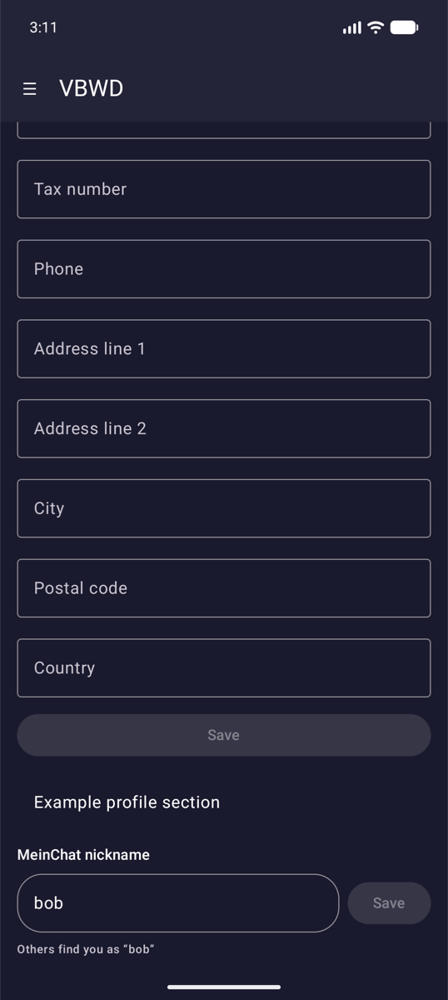

MeinChat reference
vbwd-android-meinchat is the most feature-complete
plugin and a good template for rich, stateful features. It registers a
prefix route (/meinchat), a profile section, a menu item,
stores, an auth-aware push-token sink, and exposes a secure-messaging
seam that meinchat-plus fills. The screenshots below are
from the running example app.
Direct messaging — inbox & conversations
The inbox lists conversations as cards (colour-keyed initials avatar, last-message preview, unread badge) with a Chats / Rooms toggle and a + New chat entry.

A conversation renders message bubbles — outgoing right (primary), incoming left (surfaceVariant) with the sender name — a top bar, and a rounded input with a circular send button. The thread is sorted by sent time and auto-scrolls to the newest message.

Token transfers
In-chat token transfers arrive as messages with
system_kind = token_transfer and a JSON body. The UI parses
them and renders a card ("Sent / Received N tokens to /
from X", plus an optional note) instead of raw JSON — right-aligned when
you are the sender.

Image attachments
Message image attachments (storage_url is relative
/uploads/...) are resolved against the host origin and
loaded with Coil.

Group rooms
The Rooms tab lists group rooms (member count, unread badge); opening one reuses the same bubble UI with the room name + member count in the top bar.


Find users / start a chat
+ New chat searches users by nickname and opens (or creates) a conversation on tap.

Nickname management
A profile section (ProfileMeinChatNickname) lets the
user view and change their meinchat nickname.

How it maps to the contract
| Feature | Seam used |
|---|---|
/meinchat screen |
addRoute(PluginRoute(matchPrefix = true, requiresAuth = true)) |
| Nickname editor | addComponent("ProfileMeinChatNickname") { … } |
| Side-menu entry | addMenuItem(MenuItem(routePath = "/meinchat", …)) |
| Limits / retention / cache | createStore("meinchat…", …) |
| Push token relay | sdk.notifications.registerSink(...),
events.on(AUTH_LOGIN/LOGOUT) |
| Backend calls | sdk.api.get/post(...) |
| Media origin | derived from sdk.apiConfig.baseUrl |
| E2E seam | a store id consumed by meinchat-plus (the one declared
peer dependency) |
Automated coverage of these screens lives in
MeinChatScreenTest (Robolectric Compose tests); see Testing & the quality gate.
Next: Published artifacts →